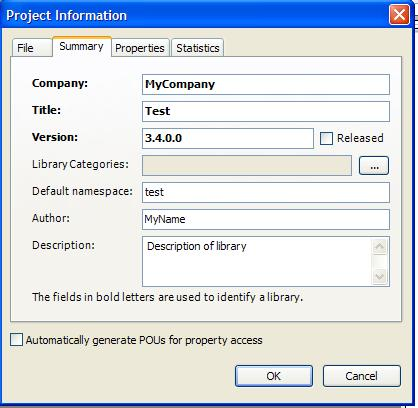
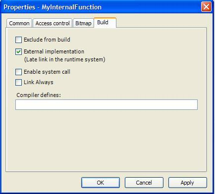
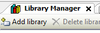
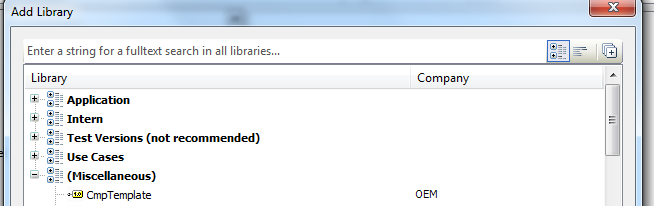
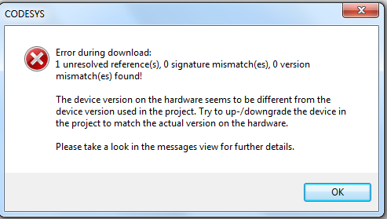
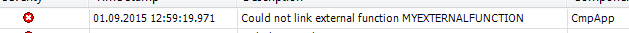

Create a CODESYS Library¶
This chapter shows how to create a CODESYS library that declares external functions.
The code of this function has to be implemented inside a runtime component. In the next chapter, we will have a look on the runtime part and create a component that implements this function.
The CmpTemplate folder of the runtime delivery contains a library and the component. You can use this as a starting point or create a new library:
Create a new empty CODESYS library from the Menu: File -> New Project
- Edit project information (Project -> Project information…)
Add your function and function blocks to the POU pool. Every CODESYS V3 library can have internal (in IEC) and external (in C) POUs mixed:
For every internal POU, you have to implement the body in IEC.
- For every external POU, you have to set the flag “external implementation” in the POUs properties and leave the body empty.
- If the “Check all Pool Objects” check does not show any compile errors, save and install the library into the library repository:Note: During library development, it is recommendable that you start two instances of CODESYS: One with your test project and in the other instance, you edit the library. There you can use this button to save and install your modified library. The library is then automatically reloaded in the other instance.
- Generate and save the runtime system files (in the CODESYS instance with the library) with Build -> Generate runtime system files. In the following dialog, select “M4 interface file” and “C stub file”. You will need both for your runtime system component.Note: If you change your interface later, you need to merge those files manually.
Now the library is ready to use in a project. For test, you can create a new project, add the new library to your application and call the internal and external functions and function blocks from the IEC code.
To use the library in your project, open the library manager of your application, and choose the button “Add library”:

The library will show up the library list. The position depends on the library categories you did choose when creating the library. In this example, we did not define a library category, so the library appears under miscellaneous:

You can now add the function call to your IEC application. Now, you can compile your application without errors.
If you download the application to a runtime system, you will receive errors, because of unresolved external references. Unresolved external references appear, when the project contains calls to external POUs that are not implemented in the runtime.
You will receive an error message like this:

And in the logger:

To resolve these errors, the library functions must be implemented in the runtime system component. This is explained in the next chapter.